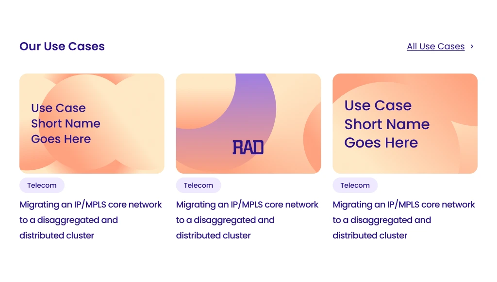
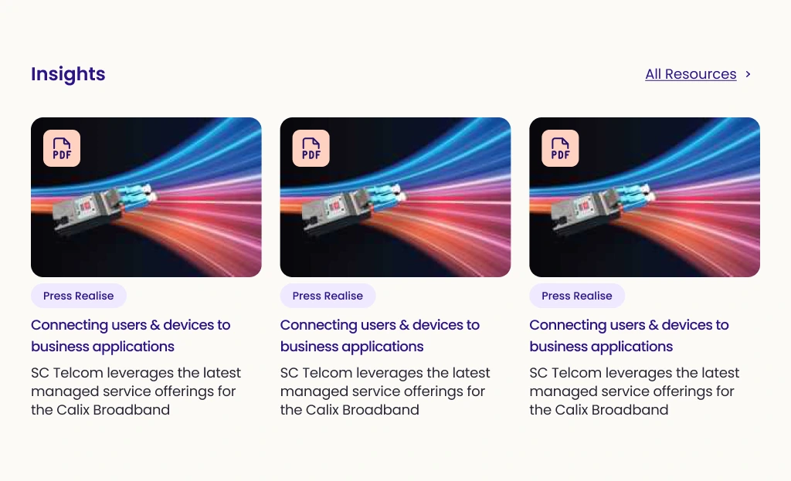

03 / CONTENT DESIGN
Different content.
Different cues.
I gave use cases and articles distinct visual treatments while keeping the same underlying card rhythm.
Use cases use branded graphic covers and concise titles. Insights introduce imagery, resource icons and short summaries. Category labels help distinguish the content before a visitor opens it.

